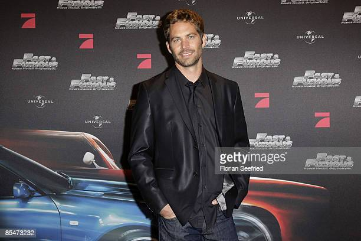

Paul William Walker IV
ator

Biografia do paul Walker
Paul William Walker nasceu em Glendale, Califórnia e cresceu em San Fernando Valley, arredores de Los Angeles. Filho de Paul Walker III e Cheryl, uma ex-modelo. possui ascendência inglesa, irlandesa e alemã e foi criado como membro da Igreja de Jesus Cristo dos Santos dos Últimos Dias, ou Mórmons. Formou-se na Village Christian School e após o colegial, frequentou diversas faculdades da comunidade, buscando uma carreira em biologia marinha.Linha do tempo
1973 No dia 12 de setembro de 1973 nasce paul william walker.
1975 Começou como modelo infantil aos dois anos de idade.
1985 aos doze anos, conquistou papeis em séries de TV como, Highway to Heaven, The Young and the Restless e Touched By an Angel.
1986 Em 1986, ganhou o seu primeiro papel no cinema, deixando de lado a carreira de modelo, que começou incentivada pela mãe, uma ex-modelo.
1998 Em 1998, veio o filme Os Irmãos Id & Ota. Com esse filme ele ganhou fama. Isso levou-o a papéis de apoio nos filmes Pleasantville -
A Vida em Preto e Branco, Marcação Cerrada, Ela É Demais e Sociedade Secreta.
2001Em 2001, Walker chegou ao total estrelato ao contracenar com Vin Diesel no bem sucedido filme de ação The Fast and the Furious.
O filme deu notoriedade a Walker e levou-o a fazer a sua sequência em 2 Fast 2 Furious.
Continuou a sua carreira com os principais papéis em filmes como Joy Ride, Timeline, Into the Blue, e teve também um papel de apoio na adaptação de Clint Eastwood, Flags of Our Fathers de 2006.
2006 Entre alguns dos seus filmes, destacam-se No Rastro da Bala e Resgate Abaixo de Zero da Walt Disney Pictures, ambos lançados em 2006.
Resgate Abaixo de Zero garantiu críticas e elogios, abrindo em primeiro lugar nas bilheterias, ultrapassando a marca dos $20 milhões durante o seu primeiro fim de semana de estreia.
Durante as filmagens de No Rastro da Bala, o diretor Wayne Kramer ficou bastante satisfeito com a atuação de Walker no filme.
2008/2009 Walker estrelou no filme independente Entre a Vida e a Morte que foi lançado em DVD em 21 de outubro de 2008.
Ele posteriormente retornou à franquia de The Fast and the Furious, retomando o seu papel em Fast & Furious, como Brian O'Conner.
O filme foi lançado em 3 de abril de 2009.
2010 Walker estava no elenco de Takers, filme que trás Matt Dillon e Hayden Christensen. As filmagens começaram no início de setembro de 2008 e o filme teve estreia em 2010.[13]
Pouco antes de morrer, Walker tornou-se um cristão não-denominacional.
Quase dois anos após sua morte, Meadow Walker, abriu processo contra a empresa Porsche por Homicídio culposo.
A musica See You Again, do cantor Wiz Khalifa com participação de Charlie Puth, foi feita em homenagem a Walker, além de ser a musica-tema de Furious 7.
2013 Paul Walker morreu em 30 de novembro de 2013, aos 40 anos, num acidente de carro no sul da Califórnia,
nos Estados Unidos, informou o seu publicitário na conta oficial do ator no Twitter e no Facebook.
Se quiser saber mais sobre paul walker, Clique Aqui
Fontes utilizadas na página: Timetoast e eBiografia